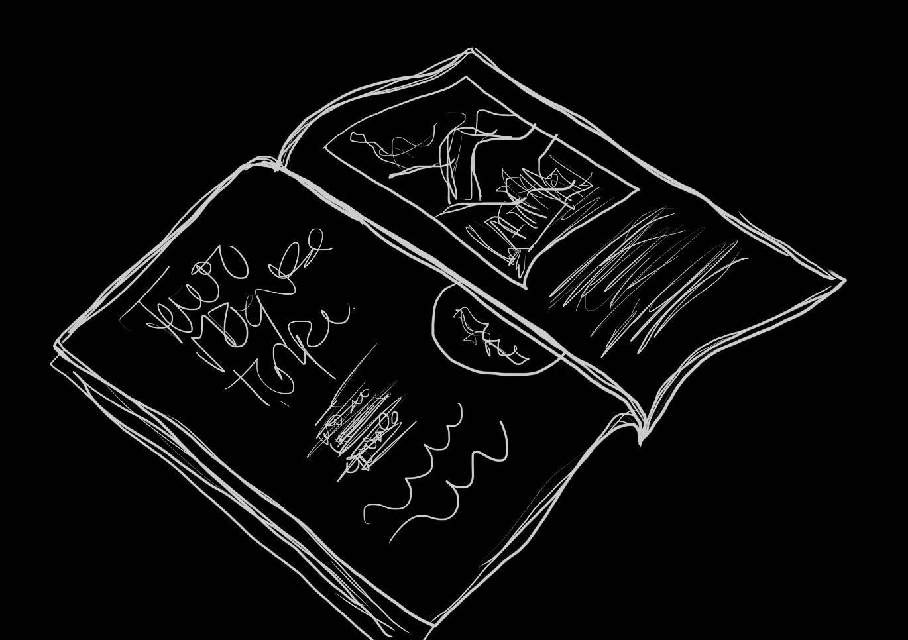

Tenia planes para ambos que involucraban un viaje fuera de la ciudad a un lugar que vi en una revista que dejaste tirada por ahí. No te tengo conmigo, pero mantengo una buena actitud. Se que preferirías que me fuera antes que verme en la forma en que estoy ahora.
